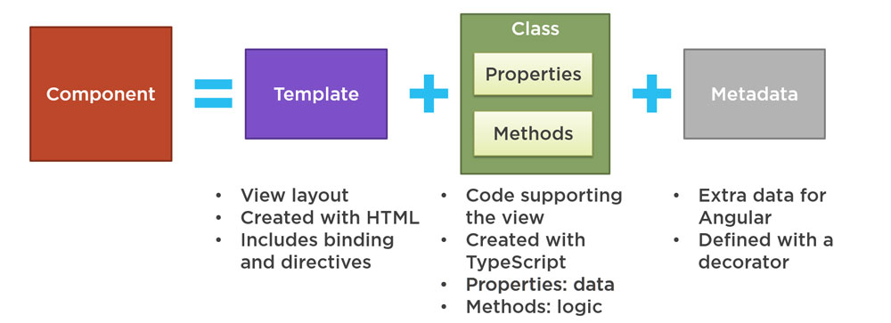

What is Angular?
Angular is an open-source and TypeScript-based platform and framework for building client-side web applications as Single Page Applications
Angular version history
- Angular 1.0 which is known as AngularJS was released in 2010 by Google
- Angular 2.0 was released in September 2016
- Angular 4.0 was released in March 2017
- Angular 5.0 was released in November 2017
- Angular 7.0 was released in October 2018
- Angular 8.0 target release date in May 2019
Separate terms should be used for each framework with "AngularJS" referring to the 1.X versions and "Angular" without the "JS" referring to versions 2 and up.
Why do we need Angular?
Benefits of Using Angular
- Gives your apps a clear structure to easily manage your project;
- Includes a lot of re-usable code;
- It provides support for most platform and web browsers such as web, mobile, and desktop;
- Make our apps more testable.
Architecture of Angular
Main building blocks of an Angular Application
- Modules
- Components
- Templates
- Metadata
- Data binding
- Directives
- Services
- Dependency Injection
Angular Module (NgModules)
- Help organize an application into cohesive blocks of functionality
- Every Angular app has a root module.
- Many Angular libraries are module e.g. FormsModule, HttpModule, RouterModule
- Many third party libraries are available as Angular modules
Angular Module (NgModules)
// app.module.ts
import { BrowserModule } from '@angular/platform-browser';
import { NgModule } from '@angular/core';
import { AppRoutingModule } from './app-routing.module';
import { AppComponent } from './app.component';
@NgModule({
declarations: [ AppComponent ],
imports: [ BrowserModule, AppRoutingModule ],
providers: [],
bootstrap: [AppComponent]
})
export class AppModule { }
Angular Components
Angular Components
import { Component } from '@angular/core';
@Component({
selector: 'app-root',
templateUrl: './app.component.html',
styleUrls: ['./app.component.css']
})
export class AppComponent {
title = 'angular7-router-demo';
}
- The @Component decorator takes some meta information about the component
- selector: It's used to call the component from an HTML
- templateUrl: It' used to specify the relative path to an HTML file that will be used as the component's template
- styleUrls: It's an array that specifies one or more stylesheets that can be used to style the component's view.
Angular Templates
{{2 | power: 5}}
Angular Metadata
// app.component.ts
@Component({
selector: 'app-root',
templateUrl: './app.component.html',
styleUrls: ['./app.component.css']
})
Metadata can be attached to the TypeScript using the decorator. @Component is a decorator which makes use of configuration object to create the component and its view.
Angular Data building
Data building is communication between business logic and views.
There are four forms of data binding and they differ in the way the data is flowing.
- Interpolation: {{ value }}
- Property binding: [property]=”value”
- Event binding: (event)=”function”
- Two-way data binding: [(ngModel)]=”value”
Angular Directives
- Component: A component is a directive-with-a-template. A @Component decorator is actually a @Directive decorator extended with template-oriented features.
- Structural directive: Alter layout by adding, removing, and replacing elements in DOM;
- Attribute directive: Alter the appearance or behavior of an existing element.
Angular services
- The mechanism used to share functionalities over components
- Services are used to achieve DRY and separation of concerns into an Angular application
- A services are injected using DI mechanism
- For example: data service, logging sevice, app configuration
Dependency Injection (DI)
- Dependency Injection (DI) is a way to create objects that depend on the other objects.
- A way to supply a new instance of a class with the fully-formed dependencies it rewuires.
- Most dependencies are services
- Angular uses dependency injection to provide new component with the services they need
Together a component and template define an Angular view.